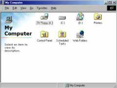

|
第01課 |
 |
|  |
創建一個OpenGL窗口:
在這個教程裡,我將教你在Windows環境中創建OpenGL程序.它將顯示一個空的OpenGL窗口,可以在窗口和全屏模式下切換,按ESC退出.它是我們以後應用程序的框架.
理解OpenGL如何工作非常重要，你可以在教程的末尾下載源程序，但我強烈建議你至少讀一遍教程，然後再開始編程. |
|
 |
 | |  |
 |
歡迎來到我的 OpenGL教程。我是個對 OpenGL充滿激情的普通男孩！ 我第一次聽說 OpenGL是
3Dfx 發佈 Voodoo1 卡的 OpenGL硬件加速驅動的時候。我立刻意識到 OpenGL是那種必須學習的東西。不幸的是當時很難從書本或網絡上找到關於
OpenGL的訊息。我花了 N 個 小時來調試自己書寫的代碼，甚至在 IRC和 EMail 上花更多的時間來懇求別人幫忙。但我發現那 些懂得 OpenGL
高手們保留了他們的精華，對共享知識也不感興趣。實在讓人灰心 !
我創建這個網站的目的是為了幫助那些對 OpenGL有興趣卻又需要幫助的人。在我的每個教程中，我都會盡可能詳細的來解釋每一行代碼的作用。我會努力讓我的代碼更簡單（您無需學習
MFC代碼）！就算您是個VC 、OPENGL的絕對新手也應該可以讀通代碼，並清楚的知道發生了什麼。我的站點只是許多提供 OpenGL教程的站點中的一個。如果您是
OpenGL的高級程序員的話，我的站點可能太簡單了，但如果您才開始的話，我想這個站點會教會您許多東西！
教程的這一節在2000年一月徹底重寫了一遍。將會教您如何設置一個 OpenGL窗口。它可以只是一個窗口或是全屏幕的、可以任意 大小、任意色彩深度。此處的代碼很穩定且很強大，您可以在您所有的OpenGL項目中使用。我所有的教程都將基於此節的代碼！所有的錯誤都有被報告。所以應該沒有內存洩漏，代碼也很容易閱讀和修改。感謝Fredric
Echols對代碼所做的修改！
現在就讓我們直接從代碼開始吧。第一件事是打開VC然後創建一個新工程。如果您不知道如何創建的話，您也許不該學習OpenGL，而應該先學學VC。某些版本的VC需要將
bool 改成 BOOL , true 改成 TRUE , false 改成 FALSE ，請自行修改。
在您創建一個新的Win32程序（不是console控制台程序）後，您還需要鏈接OpenGL庫文件。在VC中操作如下：Project->
Settings,然後單擊LINK標籤。在"Object/Library Modules"選項中的開始處（在 kernel32.lib
前）增加 OpenGL32.lib GLu32.lib 和 GLaux.lib 後單擊OK按鈕。現在可以開始寫您的OpenGL程序了。
代碼的前4行包括了我們使用的每個庫文件的頭文件。如下所示：
|
|
#include <windows.h> // Windows的頭文件
#include <glew.h> // 包含最新的gl.h,glu.h庫
#include <glut.h> // 包含OpenGL實用庫
|
接下來您需要設置您計劃在您的程序中使用的所有變量。本節中的例程將創建一個空的OpenGL窗口，因此我們暫時還無需設置大堆的變量。餘下需要設置的變量不多，但十分重要。您將會在您以後所寫的每一個OpenGL程序中用到它們。
第一行設置的變量是Rendering Context(著色描述表)。每一個OpenGL都被連接到一個著色描述表上。著色描述表將所有的OpenGL調用命令連接到Device
Context(設備描述表)上。我將OpenGL的著色描述表定義為 hRC 。要讓您的程序能夠繪製窗口的話，還需要創建一個設備描述表，也就是第二行的內容。Windows的設備描述表被定義為
hDC 。DC將窗口連接到GDI(Graphics Device Interface圖形設備接口)。而RC將OpenGL連接到DC。第三行的變量
hWnd 將保存由Windows給我們的窗口指派的句柄。最後，第四行為我們的程序創建了一個Instance(實例)。 |
|
HGLRC hRC=NULL; // 窗口著色描述表句柄
HDC hDC=NULL; // OpenGL渲染描述表句柄
HWND hWnd=NULL; // 保存我們的窗口句柄
HINSTANCE hInstance; // 保存程序的實例
|
下面的第一行設置一個用來監控鍵盤動作的數組。有許多方法可以監控鍵盤的動作，但這裡的方法很可靠，並且可以處理多個鍵同時按下的情況。
active 變量用來告知程序窗口是否處於最小化的狀態。如果窗口已經最小化的話，我們可以做從暫停代碼執行到退出程序的任何事情。我喜歡暫停程序。這樣可以使得程序不用在後台保持運行。
fullscreen 變量的作用相當明顯。如果我們的程序在全屏狀態下運行， fullscreen 的值為TRUE，否則為FALSE。這個全局變量的設置十分重要，它讓每個過程都知道程序是否運行在全屏狀態下。 |
|
bool keys[256]; // 保存鍵盤按鍵的數組
bool active=TRUE; // 窗口的活動標誌，缺省為TRUE
bool fullscreen=TRUE; // 全屏標誌缺省，缺省設定成全屏模式
|
現在我們需要先定義WndProc()。必須這麼做的原因是CreateGLWindow()有對WndProc()的引用，但WndProc()在CreateGLWindow()之後才出現。在C語言中，如果我們想要訪問一個當前程序段之後的過程和程序段的話，必須在程序開始處先申明所要訪問的程序段。所以下面的一行代碼先行定義了WndProc()，使得CreateGLWindow()能夠引用WndProc()。 |
|
LRESULT CALLBACK WndProc(HWND, UINT, WPARAM, LPARAM); // WndProc的定義
|
下面的代碼的作用是重新設置OpenGL場景的大小，而不管窗口的大小是否已經改變(假定您沒有使用全屏模式)。甚至您無法改變窗口的大小時(例如您在全屏模式下)，它至少仍將運行一次--在程序開始時設置我們的透視圖。OpenGL場景的尺寸將被設置成它顯示時所在窗口的大小。 |
|
GLvoid ReSizeGLScene(GLsizei width, GLsizei height) // 重置OpenGL窗口大小
{
if (height==0) // 防止被零除
{
height=1; // 將Height設為1
}
glViewport(0, 0, width, height); // 重置當前的視口
|
下面幾行為透視圖設置屏幕。意味著越遠的東西看起來越小。這麼做創建了一個現實外觀的場景。此處透視按照基於窗口寬度和高度的45度視角來計算。0.1f，100.0f是我們在場景中所能繪製深度的起點和終點。
glMatrixMode(GL_PROJECTION)指明接下來的兩行代碼將影響projection matrix(投影矩陣)。投影矩陣負責為我們的場景增加透視。
glLoadIdentity()近似於重置。它將所選的矩陣狀態恢復成其原始狀態。調用 glLoadIdentity()之後我們為場景設置透視圖。
glMatrixMode(GL_MODELVIEW)指明任何新的變換將會影響 modelview matrix(模型觀察矩陣)。模型觀察矩陣中存放了我們的物體訊息。最後我們重置模型觀察矩陣。如果您還不能理解這些術語的含義，請別著急。在以後的教程裡，我會向大家解釋。只要知道如果您想獲得一個精彩的透視場景的話，必須這麼做。 |
|
glMatrixMode(GL_PROJECTION); // 選擇投影矩陣
glLoadIdentity(); // 重置投影矩陣
// 設置視口的大小
gluPerspective(45.0f,(GLfloat)width/(GLfloat)height,0.1f,100.0f);
glMatrixMode(GL_MODELVIEW); // 選擇模型觀察矩陣
glLoadIdentity(); // 重置模型觀察矩陣
}
|
接下的代碼段中，我們將對OpenGL進行所有的設置。我們將設置清除屏幕所用的顏色，打開深度緩存，啟用smooth
shading(陰影平滑)，等等。這個例程直到OpenGL窗口創建之後才會被調用。此過程將有返回值。但我們此處的初始化沒那麼複雜，現在還用不著擔心這個返回值。 |
|
int InitGL(GLvoid) // 此處開始對OpenGL進行所有設置
{
|
下一行啟用smooth shading(陰影平滑)。陰影平滑通過多邊形精細的混合色彩，並對外部光進行平滑。我將在另一個教程中更詳細的解釋陰影平滑。 |
|
glShadeModel(GL_SMOOTH); // 啟用陰影平滑
|
下一行設置清除屏幕時所用的顏色。如果您對色彩的工作原理不清楚的話，我快速解釋一下。色彩值的範圍從0.0f到1.0f。0.0f代表最黑的情況，1.0f就是最亮的情況。glClearColor
後的第一個參數是Red Intensity(紅色份量),第二個是綠色，第三個是藍色。最大值也是1.0f，代表特定顏色份量的最亮情況。最後一個參數是Alpha值。當它用來清除屏幕的時候，我們不用關心第四個數字。現在讓它為0.0f。我會用另一個教程來解釋這個參數。
通過混合三種原色(紅、綠、藍)，您可以得到不同的色彩。希望您在學校裡學過這些。因此，當您使用glClearColor(0.0f,0.0f,1.0f,0.0f)，您將用亮藍色來清除屏幕。如果您用
glClearColor(0.5f,0.0f,0.0f,0.0f)的話，您將使用中紅色來清除屏幕。不是最亮(1.0f)，也不是最暗 (0.0f)。要得到白色背景，您應該將所有的顏色設成最亮(1.0f)。要黑色背景的話，您該將所有的顏色設為最暗(0.0f)。 |
|
glClearColor(0.0f, 0.0f, 0.0f, 0.0f); // 黑色背景
|
接下來的三行必須做的是關於depth buffer(深度緩存)的。將深度緩存設想為屏幕後面的層。深度緩存不斷的對物體進入屏幕內部有多深進行跟蹤。我們本節的程序其實沒有真正使用深度緩存，但幾乎所有在屏幕上顯示3D場景OpenGL程序都使用深度緩存。它的排序決定那個物體先畫。這樣您就不會將一個圓形後面的正方形畫到圓形上來。深度緩存是OpenGL十分重要的部分。 |
|
glClearDepth(1.0f); // 設置深度緩存
glEnable(GL_DEPTH_TEST); // 啟用深度測試
glDepthFunc(GL_LEQUAL); // 所作深度測試的類型
|
接著告訴OpenGL我們希望進行最好的透視修正。這會十分輕微的影響性能。但使得透視圖看起來好一點。 |
|
glHint(GL_PERSPECTIVE_CORRECTION_HINT, GL_NICEST); // 告訴系統對透視進行修正
|
最後，我們返回TRUE。如果我們希望檢查初始化是否OK，我們可以查看返回的 TRUE或FALSE的值。如果有錯誤發生的話，您可以加上您自己的代碼返回FALSE。目前，我們不管它。 |
|
return TRUE; // 初始化 OK
}
|
下一段包括了所有的繪圖代碼。任何您所想在屏幕上顯示的東東都將在此段代碼中出現。以後的每個教程中我都會在例程的此處增加新的代碼。如果您對OpenGL已經有所瞭解的話，您可以在
glLoadIdentity()調用之後，返回TRUE值之前，試著添加一些OpenGL代碼來創建基本的形。如果您是OpenGL新手，等著我的下個教程。目前我們所作的全部就是將屏幕清除成我們前面所決定的顏色，清除深度緩存並且重置場景。我們仍沒有繪製任何東東。
返回TRUE值告知我們的程序沒有出現問題。如果您希望程序因為某些原因而中止運行，在返回TRUE值之前增加返回FALSE的代碼告知我們的程序繪圖代碼出錯。程序即將退出。 |
|
int DrawGLScene(GLvoid) // 從這裡開始進行所有的繪製
{
glClear(GL_COLOR_BUFFER_BIT | GL_DEPTH_BUFFER_BIT); // 清除屏幕和深度緩存
glLoadIdentity(); // 重置當前的模型觀察矩陣
return TRUE; // 一切 OK
}
|
下一段代碼只在程序退出之前調用。KillGLWindow() 的作用是依次釋放著色描述表，設備描述表和窗口句柄。我已經加入了許多錯誤檢查。如果程序無法銷毀窗口的任意部分，都會彈出帶相應錯誤消息的訊息窗口，告訴您什麼出錯了。使您在您的代碼中查錯變得更容易些。 |
|
GLvoid KillGLWindow(GLvoid) // 正常銷毀窗口
{
|
我們在KillGLWindow()中所作的第一件事是檢查我們是否處於全屏模式。如果是，我們要切換回桌面。我們本應在禁用全屏模式前先銷毀窗口，但在某些顯卡上這麼做可能會使得桌面崩潰。所以我們還是先禁用全屏模式。這將防止桌面出現崩潰，並在Nvidia和3dfx顯卡上都工作的很好！ |
|
if (fullscreen) // 我們處於全屏模式嗎?
{
|
我們使用ChangeDisplaySettings(NULL,0)回到原始桌面。將NULL作為第一個參數，0作為第二個參數傳遞強制Windows使用當前存放在註冊表中的值(缺省的分辨率、色彩深度、刷新頻率，等等)來有效的恢復我們的原始桌面。切換回桌面後，我們還要使得鼠標指針重新可見。 |
|
ChangeDisplaySettings(NULL,0); // 是的話，切換回桌面
ShowCursor(TRUE); // 顯示鼠標指針
}
|
接下來的代碼查看我們是否擁有著色描述表(hRC)。如果沒有，程序將跳轉至後面的代碼查看是否擁有設備描述表。 |
|
if (hRC) // 我們擁有OpenGL渲染描述表嗎?
{
|
如果存在著色描述表的話，下面的代碼將查看我們能否釋放它(將 hRC從hDC分開)。這裡請注意我使用的的查錯方法。基本上我只是讓程序嘗試釋放著色描述表(通過調用wglMakeCurrent(NULL,NULL)，然後我再查看釋放是否成功。巧妙的將數行代碼結合到了一行。 |
|
if (!wglMakeCurrent(NULL,NULL)) // 我們能否釋放DC和RC描述表?
{
|
如果不能釋放DC和RC描述表的話，MessageBox()將彈出錯誤消息，告知我們DC和RC無法被釋放。NULL意味著消息窗口沒有父窗口。其右的文字將在消息窗口上出現。"SHUTDOWN
ERROR"出現在窗口的標題欄上。MB_OK的意思消息窗口上帶有一個寫著OK字樣的按鈕。
MB_ICONINFORMATION將在消息窗口中顯示一個帶圈的小寫的i(看上去更正式一些)。 |
|
MessageBox(NULL,"釋放DC或RC失敗。","關閉錯誤",MB_OK | MB_ICONINFORMATION);
}
|
下一步我們試著刪除著色描述表。如果不成功的話彈出錯誤消息。 |
|
if (!wglDeleteContext(hRC)) // 我們能否刪除RC?
{
|
如果無法刪除著色描述表的話，將彈出錯誤消息告知我們RC未能成功刪除。然後hRC被設為NULL。 |
|
MessageBox(NULL,"釋放RC失敗。","關閉錯誤",MB_OK | MB_ICONINFORMATION);
}
hRC=NULL; // 將RC設為 NULL
}
|
現在我們查看是否存在設備描述表，如果有嘗試釋放它。如果不能釋放設備描述表將彈出錯誤消息，然後hDC設為NULL。 |
|
if (hDC && !ReleaseDC(hWnd,hDC)) // 我們能否釋放 DC?
{
MessageBox(NULL,"釋放DC失敗。","關閉錯誤",MB_OK | MB_ICONINFORMATION);
hDC=NULL; // 將 DC 設為 NULL
}
|
現在我們來查看是否存在窗口句柄，我們調用 DestroyWindow( hWnd )來嘗試銷毀窗口。如果不能的話彈出錯誤窗口，然後hWnd被設為NULL。 |
|
if (hWnd && !DestroyWindow(hWnd)) // 能否銷毀窗口?
{
MessageBox(NULL,"釋放窗口句柄失敗。","關閉錯誤",MB_OK | MB_ICONINFORMATION);
hWnd=NULL; // 將 hWnd 設為 NULL
}
|
最後要做的事是註銷我們的窗口類。這允許我們正常銷毀窗口，接著在打開其他窗口時，不會收到諸如"Windows
Class already registered"(窗口類已註冊)的錯誤消息。 |
|
if (!UnregisterClass("OpenG",hInstance)) // 能否註銷類?
{
MessageBox(NULL,"不能註銷窗口類。","關閉錯誤",MB_OK | MB_ICONINFORMATION);
hInstance=NULL; // 將 hInstance 設為 NULL
}
}
|
接下來的代碼段創建我們的OpenGL窗口。我花了很多時間來做決定是否創建固定的全屏模式這樣不需要許多額外的代碼，還是創建一個容易定制的友好的窗口但需要更多的代碼。當然最後我選擇了後者。我經常在EMail中收到諸如此類的問題：怎樣創建窗口而不使用全屏幕?怎樣改變窗口的標題欄?怎樣改變窗口的分辨率或pixel
format(象素格式)?以下的代碼完成了所有這一切！儘管最好要學學材質，這會讓您寫自己的OpenGL程序變得容易的多！
正如您所見，此過程返回布爾變量(TRUE 或 FALSE)。他還帶有5個參數：窗口的標題欄，窗口的寬度，窗口的高度，色彩位數(16/24/32)，和全屏標誌(TRUE
--全屏模式， FALSE--窗口模式 )。返回的布爾值告訴我們窗口是否成功創建。 |
|
BOOL CreateGLWindow(char* title, int width, int height, int bits, bool fullscreenflag)
{
|
當我們要求Windows為我們尋找相匹配的象素格式時，Windows尋找結束後將模式值保存在變量PixelFormat中。 |
|
GLuint PixelFormat; // 保存查找匹配的結果
|
wc用來保存我們的窗口類的結構。窗口類結構中保存著我們的窗口信息。通過改變類的不同字段我們可以改變窗口的外觀和行為。每個窗口都屬於一個窗口類。當您創建窗口時，您必須為窗口註冊類。 |
|
WNDCLASS wc; // 窗口類結構
|
dwExStyle和dwStyle存放擴展和通常的窗口風格信息。我使用變量來存放風格的目的是為了能夠根據我需要創建的窗口類型(是全屏幕下的彈出窗口還是窗口模式下的帶邊框的普通窗口)；來改變窗口的風格。 |
|
DWORD dwExStyle; // 擴展窗口風格
DWORD dwStyle; // 窗口風格
|
下面的5行代碼取得矩形的左上角和右下角的坐標值。我們將使用這些值來調整我們的窗口使得其上的繪圖區的大小恰好是我們所需的分辨率的值。通常如果我們創建一個640x480的窗口，窗口的邊框會占掉一些分辨率的值。 |
|
RECT WindowRect; // 取得矩形的左上角和右下角的坐標值
WindowRect.left=(long)0; // 將Left 設為 0
WindowRect.right=(long)width; // 將Right 設為要求的寬度
WindowRect.top=(long)0; // 將Top 設為 0
WindowRect.bottom=(long)height; // 將Bottom 設為要求的高度
|
下一行代碼我們讓全局變量fullscreen等於fullscreenflag。如果我們希望在全屏幕下運行而將fullscreenflag設為TRUE，但沒有讓變量fullscreen等於fullscreenflag的話，fullscreen變量將保持為FALSE。當我們在全屏幕模式下銷毀窗口的時候，變量fullscreen的值卻不是正確的TRUE值，計算機將誤以為已經處於桌面模式而無法切換回桌面。上帝啊，但願這一切都有意義。就是一句話，fullscreen的值必須永遠fullscreenflag的值，否則就會有問題。 |
|
fullscreen=fullscreenflag; // 設置全局全屏標誌
|
下一部分的代碼中，我們取得窗口的實例，然後定義窗口類。
CS_HREDRAW 和 CS_VREDRAW 的意思是無論何時，只要窗口發生變化時就強制重畫。CS_OWNDC為窗口創建一個私有的DC。這意味著DC不能在程序間共享。WndProc是我們程序的消息處理過程。由於沒有使用額外的窗口數據，後兩個字段設為零。然後設置實例。接著我們將hIcon設為NULL，因為我們不想給窗口來個圖標。鼠標指針設為標準的箭頭。背景色無所謂(我們在GL中設置)。我們也不想要窗口菜單，所以將其設為NULL。類的名字可以您想要的任何名字。出於簡單，我將使用"OpenG"。 |
|
hInstance = GetModuleHandle(NULL); // 取得我們窗口的實例
wc.style = CS_HREDRAW | CS_VREDRAW | CS_OWNDC; // 移動時重畫，並為窗口取得DC
wc.lpfnWndProc = (WNDPROC) WndProc; // WndProc處理消息
wc.cbClsExtra = 0; // 無額外窗口數據
wc.cbWndExtra = 0; // 無額外窗口數據
wc.hInstance = hInstance; // 設置實例
wc.hIcon = LoadIcon(NULL, IDI_WINLOGO); // 裝入缺省圖標
wc.hCursor = LoadCursor(NULL, IDC_ARROW); // 裝入鼠標指針
wc.hbrBackground = NULL; // GL不需要背景
wc.lpszMenuName = NULL; // 不需要菜單
wc.lpszClassName = "OpenG"; // 設定類名字
|
現在註冊類名字。如果有錯誤發生，彈出錯誤消息窗口。按下上面的OK按鈕後，程序退出 |
|
if (!RegisterClass(&wc)) // 嘗試註冊窗口類
{
MessageBox(NULL,"註冊窗口失敗","錯誤",MB_OK|MB_ICONEXCLAMATION);
return FALSE; // 退出並返回FALSE
}
|
查看程序應該在全屏模式還是窗口模式下運行。如果應該是全屏模式的話，我們將嘗試設置全屏模式。 |
|
if (fullscreen) // 要嘗試全屏模式嗎?
{
|
下一部分的代碼看來很多人都會有問題要問關於.......切換到全屏模式。在切換到全屏模式時，有幾件十分重要的事您必須牢記。必須確保您在全屏模式下所用的寬度和高度等同於窗口模式下的寬度和高度。最最重要的是要在創建窗口之前設置全屏模式。這裡的代碼中，您無需再擔心寬度和高度，它們已被設置成與顯示模式所對應的大小。 |
|
DEVMODE dmScreenSettings; // 設備模式
memset(&dmScreenSettings,0,sizeof(dmScreenSettings)); // 確保內存清空為零
dmScreenSettings.dmSize=sizeof(dmScreenSettings); // Devmode 結構的大小
dmScreenSettings.dmPelsWidth = width; // 所選屏幕寬度
dmScreenSettings.dmPelsHeight = height; // 所選屏幕高度
dmScreenSettings.dmBitsPerPel = bits; // 每象素所選的色彩深度
dmScreenSettings.dmFields=DM_BITSPERPEL|DM_PELSWIDTH|DM_PELSHEIGHT;
|
上面的代碼中，我們分配了用於存儲視頻設置的空間。設定了屏幕的寬，高，色彩深度。下面的代碼我們嘗試設置全屏模式。我們在dmScreenSettings中保存了所有的寬，高，色彩深度訊息。下一行使用ChangeDisplaySettings來嘗試切換成與dmScreenSettings所匹配模式。我使用參數CDS_FULLSCREEN來切換顯示模式，因為這樣做不僅移去了屏幕底部的狀態條，而且它在來回切換時，沒有移動或改變您在桌面上的窗口。 |
|
// 嘗試設置顯示模式並返回結果。注: CDS_FULLSCREEN 移去了狀態條。
if (ChangeDisplaySettings(&dmScreenSettings,CDS_FULLSCREEN)!=DISP_CHANGE_SUCCESSFUL)
{
|
如果模式未能設置成功，我們將進入以下的代碼。如果不能匹配全屏模式，彈出消息窗口，提供兩個選項：在窗口模式下運行或退出。 |
|
// 若模式失敗，提供兩個選項：退出或在窗口內運行。
if (MessageBox(NULL,"全屏模式在當前顯卡上設置失敗！\n使用窗口模式？","NeHe G",MB_YESNO|MB_ICONEXCLAMATION)==IDYES)
{
|
如果用戶選擇窗口模式，變量fullscreen 的值變為FALSE,程序繼續運行。 |
|
fullscreen=FALSE; // 選擇窗口模式(Fullscreen=FALSE)
}
else
{
|
如果用戶選擇退出，彈出消息窗口告知用戶程序將結束。並返回FALSE告訴程序窗口未能成功創建。程序退出。 |
|
// 彈出一個對話框，告訴用戶程序結束
MessageBox(NULL,"程序將被關閉","錯誤",MB_OK|MB_ICONSTOP);
return FALSE; // 退出並返回 FALSE
}
}
}
|
由於全屏模式可能失敗，用戶可能決定在窗口下運行，我們需要在設置屏幕/窗口之前，再次檢查fullscreen的值是TRUE或FALSE。 |
|
if (fullscreen) // 仍處於全屏模式嗎?
{
|
如果我們仍處於全屏模式，設置擴展窗體風格為WS_EX_APPWINDOW，這將強制我們的窗體可見時處於最前面。再將窗體的風格設為WS_POPUP。這個類型的窗體沒有邊框，使我們的全屏模式得以完美顯示。
最後我們禁用鼠標指針。當您的程序不是交互式的時候，在全屏模式下禁用鼠標指針通常是個好主意。 |
|
dwExStyle=WS_EX_APPWINDOW; // 擴展窗體風格
dwStyle=WS_POPUP; // 窗體風格
ShowCursor(FALSE); // 隱藏鼠標指針
}
else
{
|
如果我們使用窗口而不是全屏模式，我們在擴展窗體風格中增加了 WS_EX_WINDOWEDGE，增強窗體的3D感觀。窗體風格改用
WS_OVERLAPPEDWINDOW，創建一個帶標題欄、可變大小的邊框、菜單和最大化/最小化按鈕的窗體。 |
|
dwExStyle=WS_EX_APPWINDOW | WS_EX_WINDOWEDGE; // 擴展窗體風格
dwStyle=WS_OVERLAPPEDWINDOW; // 窗體風格
}
|
下一行代碼根據創建的窗體類型調整窗口。調整的目的是使得窗口大小正好等於我們要求的分辨率。通常邊框會佔用窗口的一部分。使用AdjustWindowRectEx
後，我們的OpenGL場景就不會被邊框蓋住。實際上窗口變得更大以便繪製邊框。全屏模式下，此命令無效。 |
|
AdjustWindowRectEx(&WindowRect, dwStyle, FALSE, dwExStyle); // 調整窗口達到真正要求的大小
|
下一段代碼開始創建窗口並檢查窗口是否成功創建。我們將傳遞CreateWindowEx()所需的所有參數。如擴展風格、類名字(與您在註冊窗口類時所用的名字相同)、窗口標題、窗體風格、窗體的左上角坐標(0,0
是個安全的選擇)、窗體的寬和高。我們沒有父窗口，也不想要菜單，這些參數被設為NULL。還傳遞了窗口的實例，最後一個參數被設為NULL。
注意我們在窗體風格中包括了 WS_CLIPSIBLINGS 和 WS_CLIPCHILDREN。要讓OpenGL正常運行，這兩個屬性是必須的。他們阻止別的窗體在我們的窗體內/上繪圖。 |
|
if (!(hWnd=CreateWindowEx( dwExStyle, // 擴展窗體風格
"OpenG", // 類名字
title, // 窗口標題
WS_CLIPSIBLINGS | // 必須的窗體風格屬性
WS_CLIPCHILDREN | // 必須的窗體風格屬性
dwStyle, // 選擇的窗體屬性
0, 0, // 窗口位置
WindowRect.right-WindowRect.left, // 計算調整好的窗口寬度
WindowRect.bottom-WindowRect.top, // 計算調整好的窗口高度
NULL, // 無父窗口
NULL, // 無菜單
hInstance, // 實例
NULL))) // 不向WM_CREATE傳遞任何東東
|
下來我們檢查看窗口是否正常創建。如果成功， hWnd保存窗口的句柄。如果失敗，彈出消息窗口，並退出程序。 |
|
{
KillGLWindow(); // 重置顯示區
MessageBox(NULL,"不能創建一個窗口設備描述表","錯誤",MB_OK|MB_ICONEXCLAMATION);
return FALSE; // 返回 FALSE
}
|
下面的代碼描述象素格式。我們選擇了通過RGBA(紅、綠、藍、alpha通道)支持OpenGL和雙緩存的格式。我們試圖找到匹配我們選定的色彩深度(16位、24位、32位)的象素格式。最後設置16位Z-緩存。其餘的參數要麼未使用要麼不重要(stencil
buffer模板緩存和accumulation buffer聚集緩存除外)。 |
|
static PIXELFORMATDESCRIPTOR pfd= // /pfd 告訴窗口我們所希望的東東，即窗口使用的像素格式
{
sizeof(PIXELFORMATDESCRIPTOR), // 上述格式描述符的大小
1, // 版本號
PFD_DRAW_TO_WINDOW | // 格式支持窗口
PFD_SUPPORT_OPENGL | // 格式必須支持OpenGL
PFD_DOUBLEBUFFER, // 必須支持雙緩衝
PFD_TYPE_RGBA, // 申請 RGBA 格式
bits, // 選定色彩深度
0, 0, 0, 0, 0, 0, // 忽略的色彩位
0, // 無Alpha緩存
0, // 忽略Shift Bit
0, // 無累加緩存
0, 0, 0, 0, // 忽略聚集位
16, // 16位 Z-緩存 (深度緩存)
0, // 無蒙板緩存
0, // 無輔助緩存
PFD_MAIN_PLANE, // 主繪圖層
0, // Reserved
0, 0, 0 // 忽略層遮罩
};
|
如果前面創建窗口時沒有錯誤發生，我們接著嘗試取得OpenGL設備描述表。若無法取得DC，彈出錯誤消息程序退出(返回FALSE)。 |
|
if (!(hDC=GetDC(hWnd))) // 取得設備描述表了麼?
{
KillGLWindow(); // 重置顯示區
MessageBox(NULL,"不能創建一種相匹配的像素格式","錯誤",MB_OK|MB_ICONEXCLAMATION);
return FALSE; // 返回 FALSE
}
|
設法為OpenGL窗口取得設備描述表後，我們嘗試找到對應與此前我們選定的象素格式的象素格式。如果Windows不能找到的話，彈出錯誤消息，並退出程序(返回FALSE)。 |
|
if (!(PixelFormat=ChoosePixelFormat(hDC,&pfd))) // Windows 找到相應的象素格式了嗎?
{
KillGLWindow(); // 重置顯示區
MessageBox(NULL,"不能設置像素格式","錯誤",MB_OK|MB_ICONEXCLAMATION);
return FALSE; // 返回 FALSE
}
|
Windows 找到相應的象素格式後，嘗試設置象素格式。如果無法設置，彈出錯誤消息，並退出程序(返回FALSE)。 |
|
if(!SetPixelFormat(hDC,PixelFormat,&pfd)) // 能夠設置象素格式麼?
{
KillGLWindow(); // 重置顯示區
MessageBox(NULL,"不能設置像素格式","錯誤",MB_OK|MB_ICONEXCLAMATION);
return FALSE; // 返回 FALSE
}
|
正常設置象素格式後，嘗試取得著色描述表。如果不能取得著色描述表的話，彈出錯誤消息，並退出程序(返回FALSE)。 |
|
if (!(hRC=wglCreateContext(hDC))) // 能否取得著色描述表?
{
KillGLWindow(); // 重置顯示區
MessageBox(NULL,"不能創建OpenGL渲染描述表","錯誤",MB_OK|MB_ICONEXCLAMATION);
return FALSE; // 返回 FALSE
}
|
如果到現在仍未出現錯誤的話，我們已經設法取得了設備描述表和著色描述表。接著要做的是激活著色描述表。如果無法激活，彈出錯誤消息，並退出程序(返回FALSE)。 |
|
if(!wglMakeCurrent(hDC,hRC)) // 嘗試激活著色描述表
{
KillGLWindow(); // 重置顯示區
MessageBox(NULL,"不能激活當前的OpenGL渲然描述表","錯誤",MB_OK|MB_ICONEXCLAMATION);
return FALSE; // 返回 FALSE
}
|
一切順利的話，OpenGL窗口已經創建完成，接著可以顯示它啦。將它設為前端窗口(給它更高的優先級)，並將焦點移至此窗口。然後調用ReSizeGLScene
將屏幕的寬度和高度設置給透視OpenGL屏幕。 |
|
ShowWindow(hWnd,SW_SHOW); // 顯示窗口
SetForegroundWindow(hWnd); // 略略提高優先級
SetFocus(hWnd); // 設置鍵盤的焦點至此窗口
ReSizeGLScene(width, height); // 設置透視 GL 屏幕
|
跳轉至 InitGL()，這裡可以設置光照、紋理、等等任何需要設置的東東。您可以在 InitGL()內部自行定義錯誤檢查，並返回
TRUE (一切正常)或FALSE (有什麼不對)。例如，如果您在InitGL()內裝載紋理並出現錯誤，您可能希望程序停止。如果您返回 FALSE的話，下面的代碼會彈出錯誤消息，並退出程序。 |
|
if (!InitGL()) // 初始化新建的GL窗口
{
KillGLWindow(); // 重置顯示區
MessageBox(NULL,"Initialization Failed.","ERROR",MB_OK|MB_ICONEXCLAMATION);
return FALSE; // 返回 FALSE
}
|
到這裡可以安全的推定創建窗口已經成功了。我們向WinMain()返回TRUE，告知WinMain()沒有錯誤，以防止程序退出。 |
|
return TRUE; // 成功
}
|
下面的代碼處理所有的窗口消息。當我們註冊好窗口類之後，程序跳轉到這部分代碼處理窗口消息。 |
|
LRESULT CALLBACK WndProc( HWND hWnd, // 窗口的句柄
UINT uMsg, // 窗口的消息
WPARAM wParam, // 附加的消息內容
LPARAM lParam) // 附加的消息內容
{
|
下面的代碼比對uMsg的值，然後轉入case處理，uMsg 中保存了我們要處理的消息名字。 |
|
switch (uMsg) // 檢查Windows消息
{
|
如果uMsg等於WM_ACTIVE，查看窗口是否仍然處於激活狀態。如果窗口已被最小化，將變量active設為FALSE。如果窗口已被激活，變量active的值為TRUE。 |
|
case WM_ACTIVATE: // 監視窗口激活消息
{
if (!HIWORD(wParam)) // 檢查最小化狀態
{
active=TRUE; // 程序處於激活狀態
}
else
{
active=FALSE; // 程序不再激活
}
return 0; // 返回消息循環
}
|
如果消息是WM_SYSCOMMAND(系統命令)，再次比對wParam。如果wParam
是 SC_SCREENSAVE 或 SC_MONITORPOWER的話，不是有屏幕保護要運行，就是顯示器想進入節電模式。返回0可以阻止這兩件事發生。 |
|
case WM_SYSCOMMAND: // 系統中斷命令
{
switch (wParam) // 檢查系統調用
{
case SC_SCREENSAVE: // 屏保要運行?
case SC_MONITORPOWER: // 顯示器要進入節電模式?
return 0; // 阻止發生
}
break; // 退出
}
|
如果 uMsg是WM_CLOSE，窗口將被關閉。我們發出退出消息，主循環將被中斷。變量done被設為TRUE，WinMain()的主循環中止，程序關閉。 |
|
case WM_CLOSE: // 收到Close消息?
{
PostQuitMessage(0); // 發出退出消息
return 0; // 返回
}
|
如果鍵盤有鍵按下，通過讀取wParam的信息可以找出鍵值。我將鍵盤數組keys[ ]相應的數組組成員的值設為TRUE。這樣以後就可以查找key[
]來得知什麼鍵被按下。允許同時按下多個鍵。 |
|
case WM_KEYDOWN: // 有鍵按下麼?
{
keys[wParam] = TRUE; // 如果是，設為TRUE
return 0; // 返回
}
|
同樣，如果鍵盤有鍵釋放，通過讀取wParam的信息可以找出鍵值。然後將鍵盤數組keys[
]相應的數組組成員的值設為FALSE。這樣查找key[ ]來得知什麼鍵被按下，什麼鍵被釋放了。鍵盤上的每個鍵都可以用0-255之間的一個數來代表。舉例來說，當我們按下40所代表的鍵時，keys[40]的值將被設為TRUE。放開的話，它就被設為FALSE。這也是key數組的原理。 |
|
case WM_KEYUP: // 有鍵放開麼?
{
keys[wParam] = FALSE; // 如果是，設為FALSE
return 0; // 返回
}
|
當調整窗口時，uMsg 最後等於消息WM_SIZE。讀取lParam的LOWORD 和HIWORD可以得到窗口新的寬度和高度。將他們傳遞給ReSizeGLScene()，OpenGL場景將調整為新的寬度和高度。 |
|
case WM_SIZE: // 調整OpenGL窗口大小
{
ReSizeGLScene(LOWORD(lParam),HIWORD(lParam)); // LoWord=Width,HiWord=Height
return 0; // 返回
}
}
|
其餘無關的消息被傳遞給DefWindowProc，讓Windows自行處理。 |
|
// 向 DefWindowProc傳遞所有未處理的消息。
return DefWindowProc(hWnd,uMsg,wParam,lParam);
}
|
下面是我們的Windows程序的入口。將會調用窗口創建例程，處理窗口消息，並監視人機交互。 |
|
int WINAPI WinMain( HINSTANCE hInstance, // 當前窗口實例
HINSTANCE hPrevInstance, // 前一個窗口實例
LPSTR lpCmdLine, // 命令行參數
int nCmdShow) // 窗口顯示狀態
{
|
我們設置兩個變量。msg 用來檢查是否有消息等待處理。done的初始值設為FALSE。這意味著我們的程序仍未完成運行。只要程序done保持FALSE，程序繼續運行。一旦done的值改變為TRUE，程序退出。 |
|
MSG msg; // Windowsx消息結構
BOOL done=FALSE; // 用來退出循環的Bool 變量
|
這段代碼完全可選。程序彈出一個消息窗口，詢問用戶是否希望在全屏模式下運行。如果用戶單擊NO按鈕，fullscreen變量從缺省的TRUE改變為FALSE，程序也改在窗口模式下運行。 |
|
// 提示用戶選擇運行模式
if (MessageBox(NULL,"你想在全屏模式下運行麼？", "設置全屏模式",MB_YESNO|MB_ICONQUESTION)==IDNO)
{
fullscreen=FALSE; // FALSE為窗口模式
}
|
接著創建OpenGL窗口。CreateGLWindow函數的參數依次為標題、寬度、高度、色彩深度，以及全屏標誌。就這麼簡單！我很欣賞這段代碼的簡潔。如果未能創建成功，函數返回FALSE。程序立即退出。 |
|
// 創建OpenGL窗口
if (!CreateGLWindow("NeHe's OpenGL程序框架",640,480,16,fullscreen))
{
return 0; // 失敗退出
}
|
下面是循環的開始。只要done保持FALSE，循環一直進行。 |
|
while(!done) // 保持循環直到 done=TRUE
{
|
我們要做的第一件事是檢查是否有消息在等待。使用PeekMessage()可以在不鎖住我們的程序的前提下對消息進行檢查。許多程序使用GetMessage()，也可以很好的工作。但使用GetMessage()，程序在收到paint消息或其他別的什麼窗口消息之前不會做任何事。 |
|
if (PeekMessage(&msg,NULL,0,0,PM_REMOVE)) // 有消息在等待嗎?
{
|
下面的代碼查看是否出現退出消息。如果當前的消息是由PostQuitMessage(0)引起的WM_QUIT，done變量被設為TRUE，程序將退出。 |
|
if (msg.message==WM_QUIT) // 收到退出消息?
{
done=TRUE; // 是，則done=TRUE
}
else // 不是，處理窗口消息
{
|
如果不是退出消息，我們翻譯消息，然後發送消息，使得WndProc() 或 Windows能夠處理他們。 |
|
TranslateMessage(&msg); // 翻譯消息
DispatchMessage(&msg); // 發送消息
}
}
else // 如果沒有消息
{
|
如果沒有消息，繪製我們的OpenGL場景。代碼的第一行查看窗口是否激活。如果按下ESC鍵，done變量被設為TRUE，程序將會退出。 |
|
// 繪製場景。監視ESC鍵和來自DrawGLScene()的退出消息
if (active) // 程序激活的麼?
{
if (keys[VK_ESCAPE]) // ESC 按下了麼?
{
done=TRUE; // ESC 發出退出信號
}
else // 不是退出的時候，刷新屏幕
{
|
如果程序是激活的且ESC沒有按下，我們繪製場景並交換緩存(使用雙緩存可以實現無閃爍的動畫)。我們實際上在另一個看不見的"屏幕"上繪圖。當我們交換緩存後，我們當前的屏幕被隱藏，現在看到的是剛才看不到的屏幕。這也是我們看不到場景繪製過程的原因。場景只是即時顯示。 |
|
DrawGLScene(); // 繪製場景
SwapBuffers(hDC); // 交換緩存 (雙緩存)
}
}
|
下面的一點代碼是最近新加的(05-01-00)。允許用戶按下F1鍵在全屏模式和窗口模式間切換。 |
|
if (keys[VK_F1]) // F1鍵按下了麼?
{
keys[VK_F1]=FALSE; // 若是，使對應的Key數組中的值為 FALSE
KillGLWindow(); // 銷毀當前的窗口
fullscreen=!fullscreen; // 切換 全屏 / 窗口 模式
// 重建 OpenGL 窗口
if (!CreateGLWindow("NeHe's OpenGL 程序框架",640,480,16,fullscreen))
{
return 0; // 如果窗口未能創建，程序退出
}
}
}
}
|
如果done變量不再是FALSE，程序退出。正常銷毀OpenGL窗口，將所有的內存釋放，退出程序。 |
|
// 關閉程序
KillGLWindow(); // 銷毀窗口
return (msg.wParam); // 退出程序
}
|
在這一課中，我已試著盡量詳細解釋一切。每一步都與設置有關，並創建了一個全屏OpenGL程序。當您按下ESC鍵程序就會退出，並監視窗口是否激活。我花了整整2周時間來寫代碼，一周時間來改正BUG並討論編程指南，2天(
整整22小時來寫HTML文件)。如果您有什麼意見或建議請給我EMAIL。如果您認為有什麼不對或可以改進，請告訴我。我想做最好的OpenGL教程並對您的反饋感興趣。
 |
版權與使用聲明:
我是個對學習和生活充滿激情的普通男孩,在網絡上我以DancingWind為暱稱，我的聯繫方式是zhouwei02@mails.tsinghua.edu.cn，如果你有任何問題，都可以聯繫我。
引子
網絡是一個共享的資源，但我在自己的學習生涯中浪費大量的時間去搜索可用的資料，在現實生活中花費了大量的金錢和時間在書店中尋找資料，於是我給自己起了個暱稱DancingWind，其意義是想風一樣從各個知識的站點中吸取成長的養料。在飄蕩了多年之後，我決定把自己收集的資料整理為一個統一的資源庫。
版權聲明
所有DancingWind發表的內容，大多都來自共享的資源，所以我沒有資格把它們據為己有，或聲稱自己為這些資源作出了一點貢獻。故任何人都可以複製，修改，重新發表，甚至以自己的名義發表，我都不會追究，但你在做以上事情的時候必須保證內容的完整性，給後來的人一個完整的教程。最後，任何人不能以這些資料的任何部分，謀取任何形式的報酬。
發展計劃
在國外，很多資料都是很多人花費幾年的時間慢慢積累起來的。如果任何人有興趣與別人共享你的知識，我很歡迎你與我聯繫，但你必須同意我上面的聲明。
感謝
感謝我的母親一直以來對我的支持和在生活上的照顧。
感謝我深愛的女友田芹，一直以來默默的在精神上和生活中對我的支持，她甚至把買衣服的錢都用來給我買書了，她真的是我見過的最好的女孩，希望我能帶給她幸福。
資源下載:
文檔 網頁格式
PDF格式
源碼 RAR格式
|
|
|